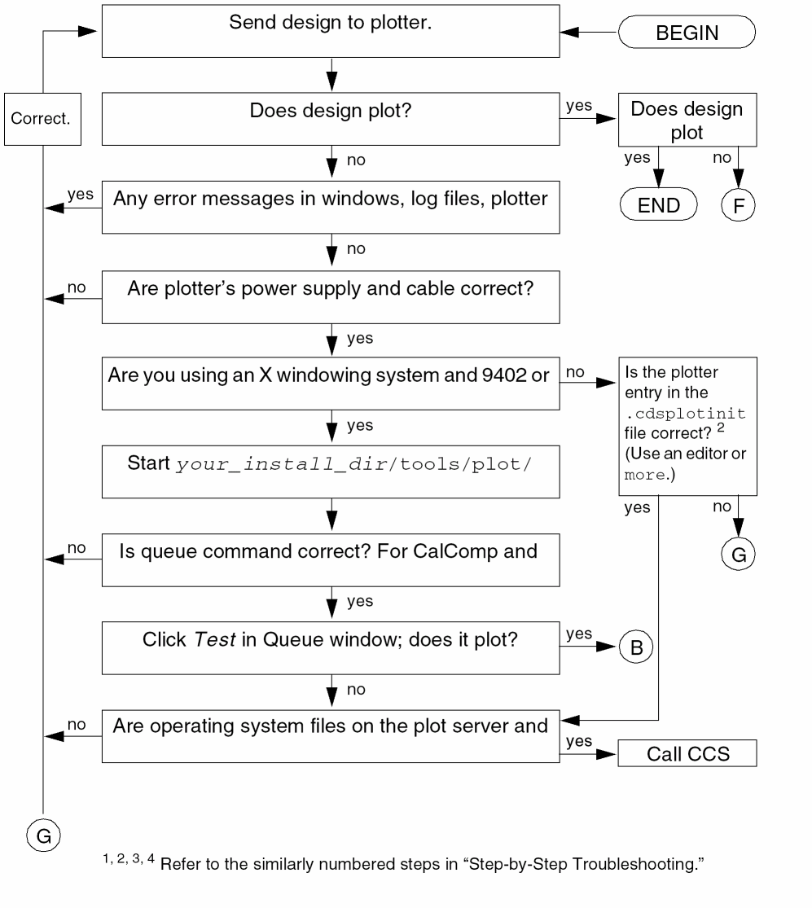
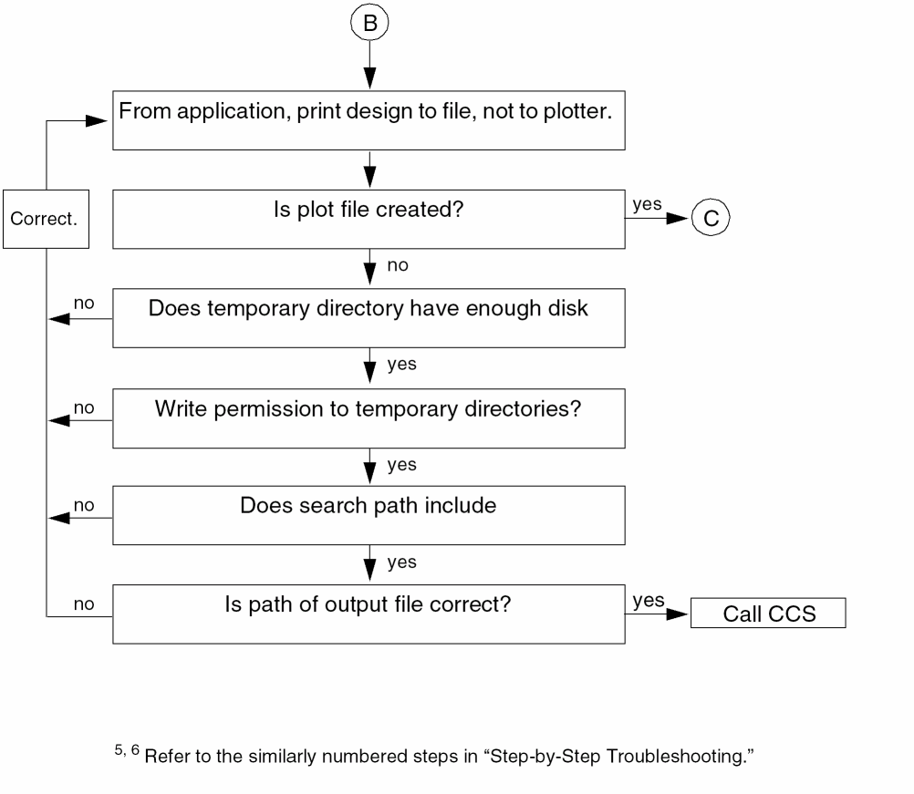
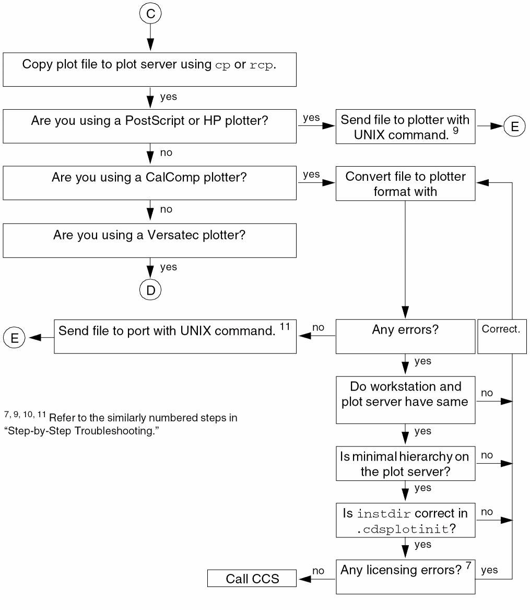
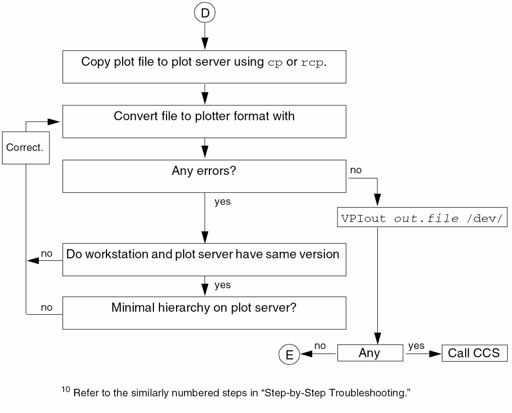
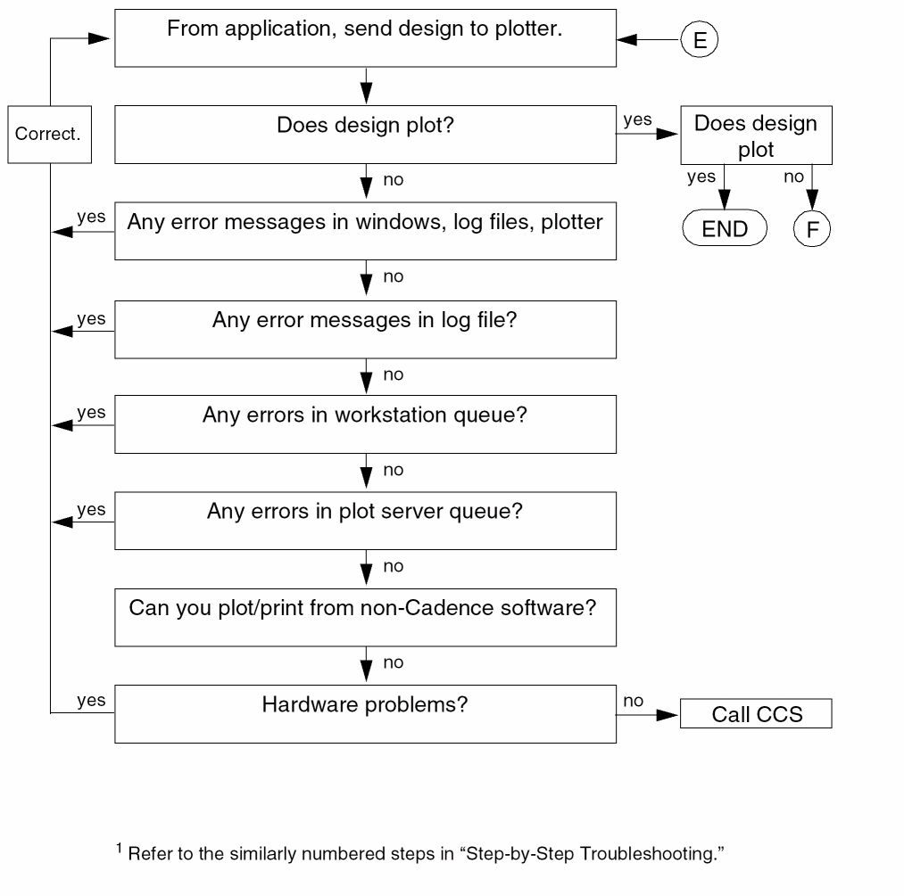
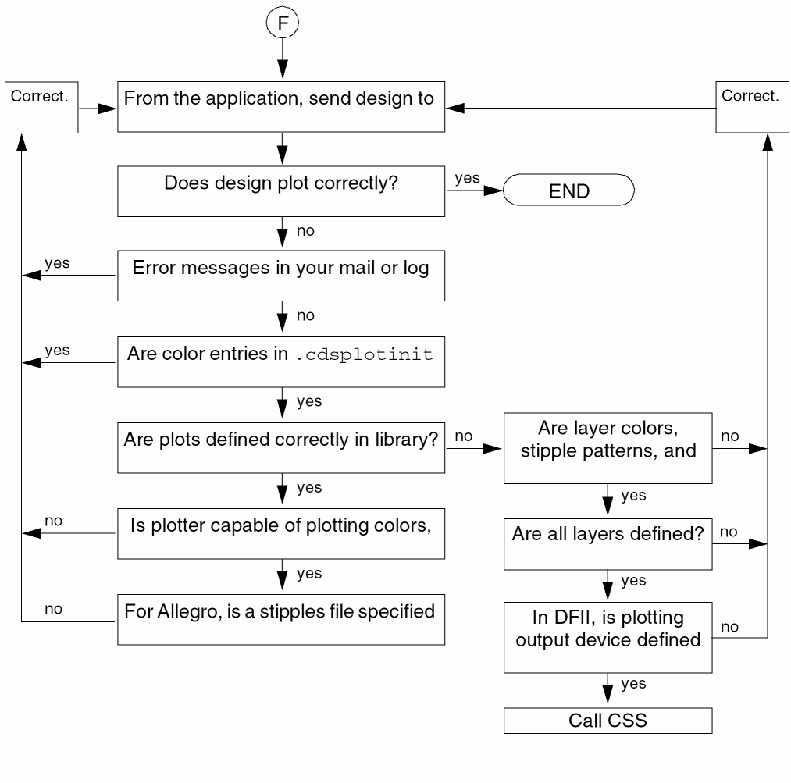

7
Troubleshooting
To troubleshoot a plotting problem, check the following.
- Depending on your Cadence application, check for error messages in
- See “Plotting Problems”.
- See “Error Messages”.
-
Send the plot to a file instead of a plotter and use the spooling system command, such as
lpr, to send the file to a plotter. - Refer to the flowchart for your operating system in Appendix B, “Configuring Spooling Systems,” to see how your operating system handles plotting.
- Follow the steps in “Troubleshooting Flow Chart” or “Step-by-Step Troubleshooting”.
Plotting Problems
Look up specific plotting problems here. Look up error messages in “Error Messages”.
The plotter name is wrong
Verify the queue device for the spooling system.
-
For SunOS, check the
/etc/printcapentry for the plotter. -
For HP-UX, use
sam. -
For Solaris, use
admintool. -
For AIX, check the
/etc/qconfigentry.
The plotter is not recognized by the Cadence application
Check the .cdsplotinit file. The Cadence® applications read the .cdsplotinit files in this sequence when the applications start:
-
your_install_dir
/tools/plot/.cdsplotinit -
Current working directory (
./.cdsplotinit) -
The
.cdsplotinitfile in the home directory entry in the password database for the user
The software overwrites plotter definitions with the same plotter name; the last plotter defined is the definition the plotter uses.
The name of the plotter precedes the vertical bar (|) on the first uncommented line. If there is no name preceding the model name, the plotter does not appear on a Cadence menu.
Plotter status indicates no daemon is present
-
In SunOS, if a status message indicates no printer daemon is running, verify the entry in the
/etc/printcapfile. -
Start the daemon with the command appropriate for your operating system. For example, for SunOS, type
/usr/lib/lpd
For HP-UX or Solaris, type/usr/lib/lpsched
For AIX, type/etc/qdaemon
If the AIX plot server will be receiving plot jobs from a SunOS system, you must startlpdon the plot server:startsrc -s lpd
Cadence Plotting Services software uses the wrong .cdsplotinit file
Because the .cdsplotinit file can be in several locations, be sure you modify the correct one. The Cadence applications read the .cdsplotinit files in this sequence when the applications start:
-
your_install_dir
/tools/plot/.cdsplotinit -
Current working directory (
./.cdsplotinit) -
The
.cdsplotinitfile in the home directory entry in the password database for the user
As the software searches the locations, new plotters are appended to the current list. The software overwrites plotter definitions with the same plotter name.
Colors, stipple patterns, or line styles plotted do not match the image on the screen
- Check your mail and the log file for errors.
-
The plotter is not defined correctly in the
.cdsplotinitfile. -
The plot is not defined correctly in the library.
In Design Framework II, check the plotting output device defined in the library’s technology file. Modify the layer colors, stipple patterns, and line styles. Add layers if necessary. -
Your plotter might not be able to plot the colors, lines, and stipple patterns defined in the library.
Check the “Customizing Lines, Colors, and Stipple Patterns” section of your plotter’s chapter for plotter limitations.
Plot does not print
- Depending on your application, check your mail and the log file for errors.
-
Verify that the plot does not exceed the maximum number of pages allowed.
Occasionally, some sites restrict the number of pages to print to save time or paper. If the plot exceeds the maximum number of pages specified in the.cdsplotinitfile, no plot plots. The plot header page is not counted.:maximumPages#2:\
Increase the number of pages allowed. - Check the plotter’s queue on your workstation and the plot server.
-
Verify that the printer daemon is running on both the plot server and the client.
Use the command appropriate for your operating system. For example, for SunOS, typeps -aux | grep lpd
For HP-UX or Solaris, type/usr/bin/lpstat -r
For AIX, typeps -edaf | grep qdaemon
If the daemon is not running, start it with the command appropriate for your operating system. -
Verify the plotter status on both the plot server and the client.
Use the command appropriate for your operating system. For example, for SunOS, typelpc status
For HP-UX or Solaris, typeplotter_namelpstat -o
For AIX, typeplotter_nameenq -q -P
plotter_name -
Verify the
/etc/servicesentry forprinterservices.
Theprinterentries in/etc/serviceson the clients must match those on the plot server. The default works, but you might have problems if someone modified the file. The default isprinter 515/tcp spooler #Line Printer Spooler
- Check the hardware connections.
- Run a self-test from the plotter.
Plotter cannot plot large designs
There are no error messages. The plotter can plot small designs.
A plotter requires the mx#0 option in the /etc/printcap file in SunOS because the option permits printing unlimited amounts of data. If mx#0 exists, check the amount of disk space in the temporary and spool directories. You might need as much as 200 megabytes in the temporary directory or 100 megabytes in the spool directory, depending on the type of plotter.
Application hangs when I click the Queue Status from the application window
The application is running in the background. You can “unhang” it by bringing the application to the foreground with the fg command, and you can determine the cause while it is hung.
Use the ps -ax command to locate the hung command. The command displays information similar to
jo 7584 0.0 0.0 28 0 p3 TW 14:32 0:00
sh -c csh -c "lpq -Plw >&! \ /tmp/querya07575 < /dev/null"
jo 7585 0.0 0.0 76 0 p3 TW 14:32 0:00
-sh -c lpq -Plw >&! \ /tmp/querya07575 < /dev/null(csh)
The process that follows these commands (or one close by) is usually the offending command.
If the command does not make sense, use ps -l to identify the parent process (PPID) of the command. For example, ps -l displays information similar to the following.
F UIDPIDPPIDCP PRI NI SZ RSS WCHANSTATTTTIMECOMMAND
2040800038916799668405 0 36 0 child IW co0:00 xinit
2000800138916800679951 064041368 select S co5:00 X :0
2000800038916801679905 0 28 0 child IW co0:00 sh /mnt2/jo
2000800038918129780705 0 28 0 TW p30:00 sh -c csh -c
20008000389181308129225 0 76 0 TW p30:00 -sh -c lpq -
20008000389181338130025 0 20 0 TW p30:00 more
The command might come from an error in your .cshrc or .profile file.
In the above example, more is the process following the hung command. When an application opens a new window, it reads the .cshrc or .profile file. An incorrect alias definition causes the file to execute a more command, which requires standard input. Because Design Framework II is running in the background, it cannot receive standard input.
In this example, necessary quotation marks were missing around an alias ending with more.
Error Messages
This section lists alphabetically the error messages from the Cadence plotting products. Numbered error messages are listed alphabetically according to the first word in the message. The messages can appear in a Cadence log file, plotter log file, application window, or in mail messages.
Abnormal end of file
Abnormal exit
Aborting program, received signal X
Bad fill pattern definition in CPIF data : Stipple pattern not 16x16, expanding. : If not 16 bits wide expect incorrect stipple on plot.
Can’t open EPS output file. Check security on temporary directory.
Cannot open input file name
-
CalComp or Versatec plotting error. The
-inputfileoption ofcds2calcomporcds2versawas used to start CalComp or Versatec plotting. Verify that the specified file exists.
Cannot open input file ... cpifParser.cc-1064: Error opening input file, name
- Either could not find the file or did not have permission to open the CPIF input file specified on the command line.
Cannot open output file ... cpifParser.cc-1099: File open failed (name)
-
Could not open the output file specified with the
-oargument on the command line. Check whether the directory exists or that the permissions are correct.
cat: writer error: Broken pipe
Computed zero pages to plot
Could not find temporary plot directory path
-
CalComp or Versatec plotting error. The Cadence software cannot find the temporary directory specified in the
.cdsplotinitfile withtmpdir.
cpifParser.cc-1149: Fork failed
-
When attempting to fork the formatter process, it failed. The formatter is specified with the
-fcommand line argument. If a Cadence formatter is used (VPI, VDS, CCRF), make sure that your search path contains the your_install_dir/tools/plot/bindirectory to allow location of VPIout, VDSout, and CCRFout. If you are using a different program such as compress, check to make sure it is in your search path.
Expected close polygon command, line X.
File filename does not exist or is not accessible.
Header is bad.
Incomplete intermediate file header
- lpd[189]: filename: No such file or directory
- System cannot queue the data to the spooling area because the path directory does not exist. Create a spool directory.
- lpd[234]: unable to get hostname for remote machine plot_server
-
The remote workstation name does not match the name in the
/etc/printcapor/etc/qconfigfile or the remote workstation is down.
- lpd[456]: vt: can’t execv install_dir/tools/plot/bin/cds2versa: No such file or directory
-
In SunOS, correct the
cds2versapath in/etc/printcap. In AIX, correct thecds2versapath in/etc/qconfig.
lpr:Error Piping File
lpr:plotter_name unknown
No paper sizes are defined.
plot il file not found plotcap il file not found
-
The software looked for the wrong file. Verify that
cds_rootreturns the correct hierarchy, such as/usr/cdsif the Cadence Plotting Services software is in/usr/cds/tools/plot.
plot mail command failed: user
- The command failed to send mail back to the plot submitter, usually due to a mail or network problem. Contact your system administrator.
plot submission failed
-
Plot submission at later time failed. See documentation for help.
This means the user is either in theat.denytable or is not in theat.allowtable. Theat.allowtable is not required. See your administrator.
Plotter is not able to do multipage plots.
-
Your plotter cannot plot plots that use more than one page. Check the
.cdsplotinitfile for themaximumPagesentry.
Plotter type is not available from the plotcap entry.
-
Verify plotter_name in the
.cdsplotinitfile. It must be listed in your_install_dir/tools/plot/etc/plotcap.il.
plotter type not found in plotcap entry “plotter.”, plotcaptype);
-
Verify plotter_name in the
.cdsplotinitfile. It must be listed in your_install_dir/tools/plot/etc/plotcap.il.
syntax error line # error
The maximumPages for plotter_name is zero
-
Correct the
maximumPagesentry for plotter_name in the.cdsplotinitfile. It must be an integer of one or more.
The resolution for plotter_name is zero
-
Specify the
resolutionentry for plotter_name in the.cdsplotinitfile. The resolution is in dots per inch, such as300.
There is no model specified for plotter_name
-
Verify plotter_model for plotter_name in the
.cdsplotinitfile. You cannot change plotter_model. You can only use plotter models recognized by Cadence Plotting Services software.
There are no paper sizes defined for plotter_name
There is no paper size selected.
There is no plot to submit.
- You did not specify a design to plot. Follow the plotting procedure in your Cadence application’s user guide.
There is no plotter selected.
There is no query command specified for plotter_name
There is no remove command specified for plotter_name
There is no spool command specified for plotter_name
There is no type specified for plotter_name
-
Verify plotter_name in the
.cdsplotinitfile. It must be listed in your_install_dir/tools/plot/etc/plotcap.ilor in Appendix A, “Cadence Plotter Configuration File.”
There were no system .cdsplotinit files found.
-
There is no default
.cdsplotinitfile. The Cadence applications read the.cdsplotinitfiles in this sequence when the applications start:-
your_install_dir
/tools/plot/.cdsplotinit -
Current working directory (
./.cdsplotinit) -
The
.cdsplotinitfile in the home directory entry in the password database for the user
As the software searches the locations, new plotters are appended to the current list. The software overwrites plotter definitions with the same plotter name. -
your_install_dir
Warning, syntax error in filename, using default values.
Troubleshooting Flow Chart
To troubleshoot a plotting problem, use the flow charts on the following pages. In the charts, CCS stands for Cadence Customer Support. For more detailed information, see
- Step-by-Step Troubleshooting
- Plotting Problems
- Error Messages
- Plotter-specific chapters
- Configuring Spooling Systems
-
Your operating system documentation
Figure 7-1 Check Plotter SetupFigure 7-2 Create Plot FileFigure 7-3 Send Plot File to PlotterFigure 7-4 Send Plot File to Plotter (Versatec)Figure 7-5 Send the Design to the PlotterFigure 7-6 If the Plot Is Not Correct
Step-by-Step Troubleshooting
When a Design Does Not Plot
This guide is for Cadence plotting software, release 4.2.2 and later. your_install_dir represents the directory in which the Cadence software is installed, such as /usr/cds.
Follow these steps until you find and correct the problem.
-
Check for error messages.
Depending on the Cadence application and operating system, check for errors in Cadence windows, user’s mail, plotter and Cadence log files, plotter LED display, and the plotter queues. -
If you have an X Window System, follow these steps.
-
Type
plotconfig.
If plotconfig cannot be found, use the full path, your_install_dir/tools/plot/bin/plotconfig.
The Plotter Configuration form appears. -
Select the personal, group, or site file.
The personal file overrides the group and site files. The plotters must be defined in at least one of these files. - In the List of Installed Plotters list box, click the plotter model.
- Verify spool commands by clicking Queue.
-
For CalComp, verify that
instdiris the path returned bycds_root. -
Test queuing by clicking Test in the Plotter Queue form.
A simple polygon plots if the spool command is correct. - Close the Plotter Queue form and click Save.
- Resubmit the plot to the plotter.
-
Type
-
When an X Window System is not available, use
moreor an editor to look at the problem plotter’s definition.
From your workstation, verify each line of the problem plotter’s entry in all.cdsplotinitfiles read by the software. Your personal.cdsplotinitfile (in the home directory entry in the password database for the user) overrides the group./.cdsplotinitand site your_install_dir/tools/plot/.cdsplotinitfiles.
The entries follow the same rules as BSD’s/etc/printcapfile. The ellipsis (…) in this sample entry represents more text.vt|8936-4:\ :manufacturer=Xerox Engineering S…:\ :type=intCLR:\ :spool=lpr -Pvt:\ :query=lpq -Pvt:\ :remove=lprm -Pvt $3:\ :maximumPages#10:\ :resolution#400:\ :residentFonts:\ :tmpdir=/usr/tmp:\ :paperSize="36 inches wide" 0 14080:
Common problems include-
Backslashes (
\) followed by spaces. - For the Concept® board designer, plotter names with spaces.
-
For CalComp and Versatec plotters, an incorrect path to the filter in the
/etc/printcapentry. -
For CalComp plotters,
instdirpointing to the wrong directory. The.cdsplotinitfile on your workstation must point to the plot server’s your_install_dir. - Specifying encapsulated PostScript for reasons other than importing a plot into word processing-type document.
-
Backslashes (
-
Check the operating system files on the plot server and on your workstation.
-
For SunOS, and OSF, look at
/etc/printcap.
Look for errors such as comment lines within a plotter definition or extra spaces. For CalComp or Versatec plotters, verify the absolute path tocds2calcompor the filter script on the plot server. Check the filter script,cdsBSD.sh, located in your_install_dir/tools/plot/binto determine the correct path to theraptorcommand. -
For HP-UX and Solaris, check the interface script,
cdsSYSV.sh, located in your_install_dir/tools/plot/bin. - For AIX, see your system manuals.
-
For SunOS, and OSF, look at
-
From your application, select the plotter name (plotter_name).
For the Concept board designer, typeset plotter
plotter_name -
Send the plot to a file (plot_file).
For the Concept board designer, createvw.spoolin your working directory:set spooled_plot hardcopy
-
If no plot file is produced, verify
- The directory to which you sent plot_file is writable
-
Adequate disk space in
/usr/tmpor the specified temporary directory and intmpdirfor CalComp and Versatec plotting - You have write permission to these directories
-
Your search path includes your_install_dir
/tools/binand your_install_dir/tools/plot/bin
- Make plot_file available to the plot server.
-
For HP and PostScript plotters, use the usual UNIX spool command, such as
lpr, to send the file to a plotter. -
For CalComp or Versatec plotters, convert plot_file (CPIF format) to plotter format.
-
On the plot server, use
cds2calcompto convert plot_file to CalComp format (cc_file) andraptorto convert plot_file to Versatec raster (versa_file).
Usecds2calcomp -helpandraptor -hto see the arguments each accepts. -
Correct any errors.
Forcds2calcomp, theinstdirin the.cdsplotinitfile on your workstation must point to the plot server’s your_install_dir.
If the plot server and your workstation use different versions of Cadence software, reinstall the plotting software.
If the plot server does not have the minimal hierarchy, reinstall the plotting software.
-
On the plot server, use
-
For a CalComp plotter, send cc_file directly to the port connected to the plotter.
For a/dev/ttyaserial plotter, typestty
For a parallel plotter, typebaudixon ixany cd8 -parity < /dev/ttya catcc_file> /dev/ttyacat
cc_file> /dev/plt_parallel - For Versatec plotters, follow these steps.
Use raptor to create standard raster data as follows:
raptor -o versa_file -v cpif.file
VPIout < versa_file > /dev/vp0
-
From the application, send the design to the plotter.
In the user interface, turn off the option that sends it to a file. For the Concept board designer, typeset local plot hardcopy
When the Plot Is Incorrect
On all supported color plotters, Cadence plotting software selects colors by either matching or mapping colors to red-green-blue (RGB) color values as described in the table.
| Color Plotter | RGB-Matched Color | Mapped Colors |
|---|---|---|
Color matching: The software tries to match RGB color values using patterns of primary color dots. Color matching works correctly only in solid-filled areas. A small plotting area, such as lines or small shapes, cannot accommodate the dot patterns so the color cannot match the RGB values. Light colors on this type of shape may disappear or appear as dashes.
Color mapping: The software maps RGB color values to the eight keyword colors (index values in the .cdsplotinit file).
For More Help
You can send e-mail to support@cadence.com or call Cadence Customer Support at 1-877-CDS-4911 (1-877-237-4911) with the following information:
-
The
.cdsplotinitfiles -
Appropriate operating system files, such as
/etc/printcapfor BSD or the interface script for HP-UX - Plotter model
- The plot file
-
System ID
At a UNIX prompt, type
The system ID is returned.your_install_dir/tools/bin/systemid
Return to top